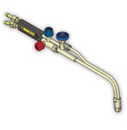

Доставка

Доставка уже обработанного, нарезанного металла выгодна по многим параметрам:
- Сокращение затрат на транспортировку металла;
- Сокращение площадей под складирование металла;
- Отсутствие дополнительных расходов на содержание и обслуживание металлообрабатывающей техники;
- Возможность использования квалифицированных работников.
Отдел продаж
Оформить заявку и получить информацию о наличии, стоимости металлопроката и услуг, условиях поставки, и пр. можно у специалистов отдела продаж по телефонам
+7 (3452) 520-670 (71, 72, 73, 74)
Металлообработка
Необходимость резки металла возникает при производстве металлоконструкций и металлических изделий. Качество этой продукции напрямую зависит от качества резки металла — точности раскроя и состояния срезов.
Компания Тримет предлагает следующие услуги по металлообработке:
- Газовая резка
- Механическая резка на абразивно-отрезном станке
- Рубка листов на гильотине
- Правка бухт в прутки
Предназначена для вырезки заготовок, раскроя листов и для других работ, связанных с разрезкой металла на несколько частей. Этим способом режут изделия из углеродистых низко- и среднелегированных сталей обычно толщиной от 1 мм до
Для газовой (кислородной) резки используется сварочная горелка со специальным устройством для подачи кислорода. Чистота режущего кислорода напрямую влияет на скорость и качество резки. По способу выполнения кислородную резку делят на ручную и машинную:
Ручная газовая резка Универсальные ручные резаки К достоинствам данного метода резания можно отнести возможность реза любого вида сложности, толщину обрабатываемого металла (до 300 мм), а также невысокую стоимость эксплуатационных затрат (невысокую стоимость услуг). Недостаток — при толщине металла более 30 мм образуется широкая линия реза — до 3 мм. Качество реза невысокое — образуются неровные обгорелые края реза, что требует дополнительной механической обработки. Технические характеристики
|
Машинная газовая резка
Переносная газорезательная машина используется для машиной резки газом Машина CG-100 II предназначена для прямолинейных резов листового металла толщиной от 5 до 300 мм, а также для вырезания кругов, нарезания фаски, в том числе Увеличению возможностей машины CG-100 служит компактная конструкция, лёгкая и безопасная работа с короткими перерывами. Резка рекомендована для использования в индустриях корабельной, мостовой и тяжёлого машиностроения, поскольку машиной CG-100 выполняются работы по резке металла различных размеров, а качество (прямолинейность, чистота) реза значительно выше, чем при ручной резке газом. Технические характеристики
|

Абразивно-отрезной станок маятникового типа СОМ-400Б для резки маятниковой пилой Станок предназначен для резки в условиях помещений ремонтно-механических мастерских и монтажно-заготовительных участков. На этом станке осуществляется распил черных и других металлов различных профилей с площадью поперечного сечения до 120×120 мм и максимальным диаметром для отрезаемой круглой трубы 120 мм, для прутка — 60 мм. К достоинствам данного метода обработки металла можно отнести высокую точность и скорость обработки, качественный рез без смятия кромки и наплыва с точностью до 2 мм. |
Кривошипно-листовые гильотинные ножницы НЛ 3427 Рубка применяется для разделки листового проката толщиной от 3 до 16 мм, шириной до 2 м. К достоинствам данного метода обработки металла можно отнести высокую точность и скорость обработки, качество резки. |
Два правильно-отрезных станка Предназначены для размотки арматуры и круга до 12 мм из бухт в прутки длиной от 7 до 12 м. |
Ознакомиться с возможностями применения оборудования и ценами на услуги вы можете с помощью прайс-листа на услуги резки.
Скачать прайс-лист (217 Кб, doc)